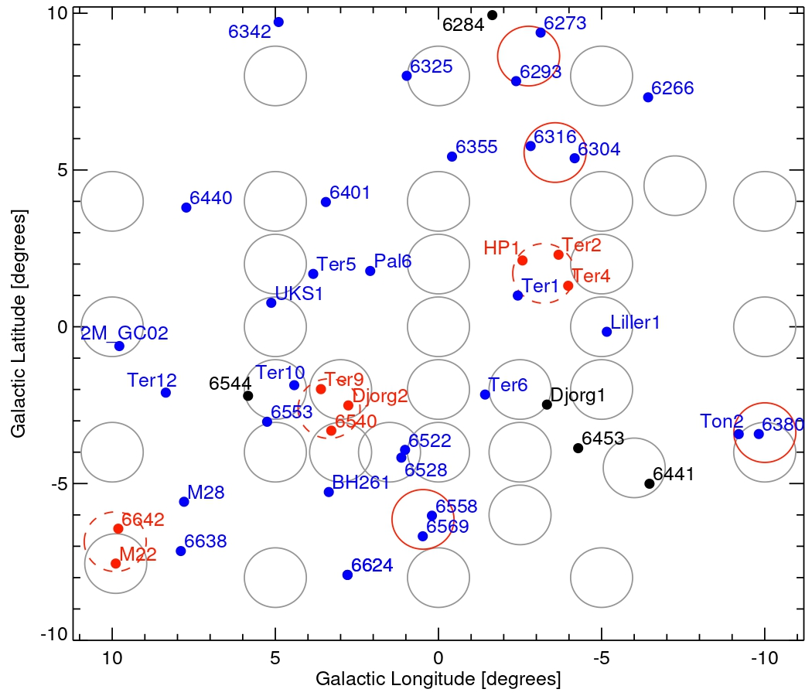
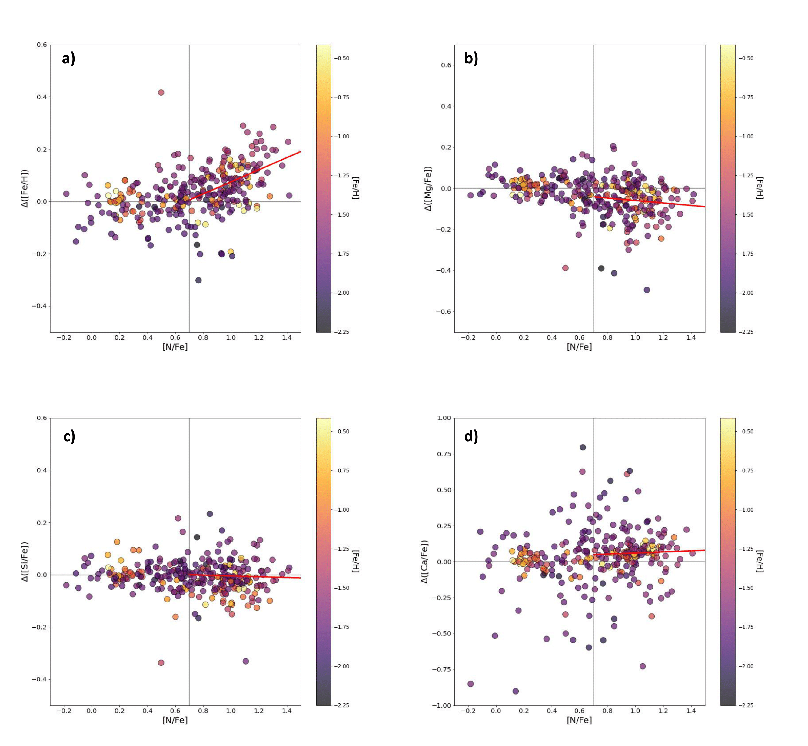
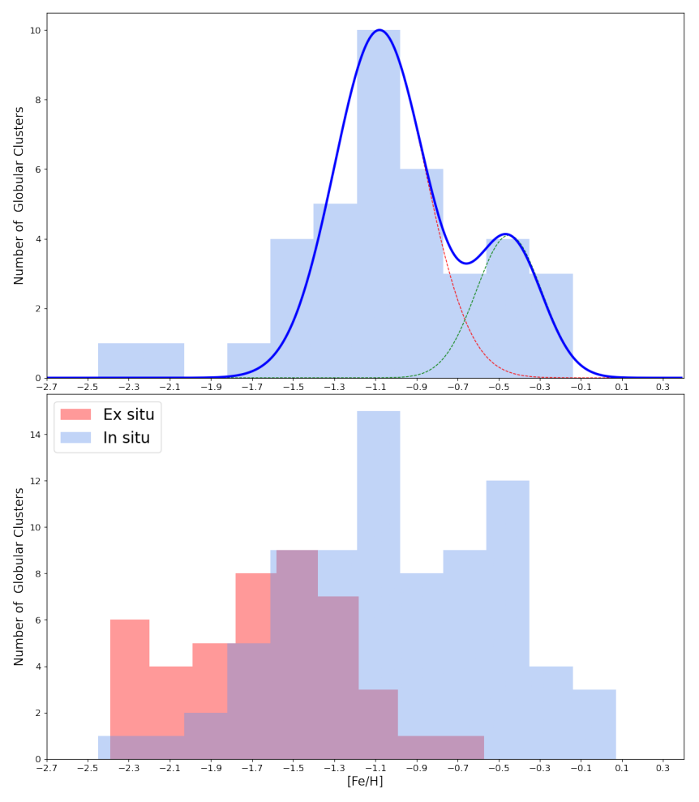
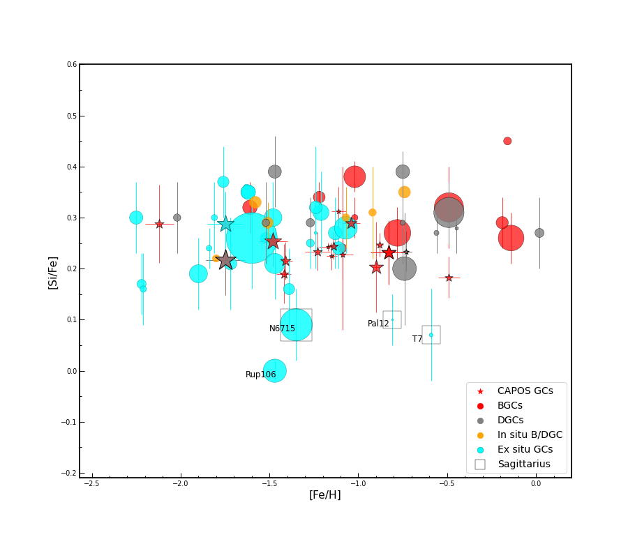

Why do bulge globular clusters matter?
Globular clusters are among the oldest structures in the Universe — living fossils of the early Galaxy. The bulge, the dense central component of the Milky Way, formed first and fastest, making its globular clusters exceptional witnesses of the earliest epoch of galaxy formation. Yet for decades, these clusters remained poorly studied: dust extinction, crowding, and differential reddening made spectroscopic observation extremely challenging.
CAPOS was designed precisely to overcome these barriers. By combining the near-infrared capabilities of APOGEE-2S with a systematic observational strategy, the survey has opened a new window onto the chemical and dynamical history of the Galactic bulge.

[ Fig. 1 — Mapa de los 18 cúmulos en el bulbo galáctico ]
Sube el archivo como: capos_fig1_map.pngAPOGEE-2S at Las Campanas Observatory
CAPOS uses APOGEE-2S, the southern hemisphere spectrograph of the Apache Point Observatory Galactic Evolution Experiment, mounted on the du Pont 2.5m telescope at Las Campanas Observatory in Chile. APOGEE operates in the near-infrared H-band (1.51–1.70 μm), allowing it to pierce through the dust that obscures the bulge at optical wavelengths.
Member stars were selected through a five-step process: spatial location within the tidal radius, proper motion from Gaia DR3, radial velocity from ASPCAP, metallicity, and CMD position. Only stars with spectral S/N > 70 were used for chemical abundances.
Multiple populations & chemical abundances
A key finding is that second-population stars, those with enhanced [N/Fe], show systematically higher [Fe/H] than first-population counterparts in the same cluster. This reflects known ASPCAP limitations with 2P atmospheric parameters, not real metallicity variations. To account for this, 2P metallicities were corrected using a best-fit linear relation before deriving cluster means. Abundances for 13 elements were then calculated using only first-population stars, with [Si/Fe] adopted as the best alpha-element proxy due to its insensitivity to multiple population effects.
The figure below shows [Si/Fe] versus [Fe/H] for the full sample of 163 clusters. CAPOS clusters appear as red stars. The key result: in situ and ex situ clusters show only a small and statistically insignificant difference in their mean [Si/Fe] abundances, challenging the theoretical expectation that clusters formed in shallower potential wells should show lower alpha-element ratios.

[ Figura de abundancias químicas para los 18 cúmulos ]
Sube el archivo como: capos_fig_abundances.pngBimodal metallicity distribution
The metallicity distribution of bulge globular clusters is strongly bimodal, with peaks near [Fe/H] = −0.45 and −1.1 dex. Notably, the metal-poor peak dominates, containing more than 70% of all BGCs. The entire in situ sample, including disk and bulge clusters, shows the same bimodality, while ex situ clusters accreted from external galaxies are unimodal with a peak around [Fe/H] = −1.6. Metallicity is thus a decent first-order predictor of GC origin: in situ clusters dominate above −1.2 dex, ex situ below −1.6 dex.

[ Figura de distribución de metalicidades ]
Sube el archivo como: capos_fig_metallicity.pngChemodynamical classification
CAPOS VIII introduced a quantitative chemodynamical classification scheme for all Galactic globular clusters, synthesizing five independent recent studies based on Gaia kinematics, orbital analysis, and chemistry. Of the 163 clusters examined, slightly more than half are classified as in situ. Forty of these are bonafide bulge globular clusters, consistent with other recent estimates. All but four of the CAPOS clusters are confirmed BGCs.

[ Figura de clasificación quimodinámica ]
Sube el archivo como: capos_fig_classification.png| Cluster | Phase | CAPOS paper | Year |
|---|---|---|---|
| NGC 6304 | SDSS-IV | CAPOS XI | 2026 |
| Terzan 2 | SDSS-IV | CAPOS IX | 2025 |
| All 18 BGCs — Final results | SDSS-IV | CAPOS VIII | 2025 |
| NGC 6316 | SDSS-IV | CAPOS VII | 2025 |
| NGC 6569 | SDSS-IV | CAPOS VI | 2023 |
| NGC 6558 | SDSS-IV | CAPOS IV | 2023 |
| Tonantzintla 2 | SDSS-IV | CAPOS III | 2022 |
| FSR 1758 | SDSS-IV | CAPOS II | 2021 |
| Overview — all initial clusters | SDSS-IV | CAPOS I | 2021 |